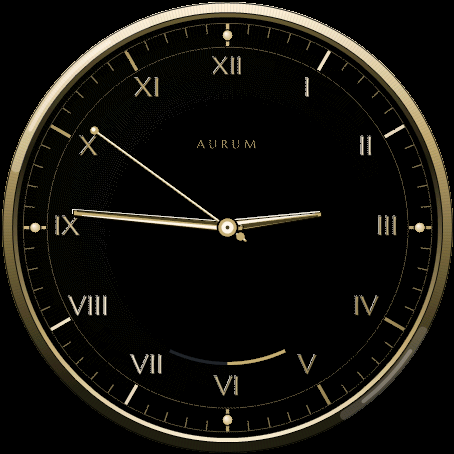
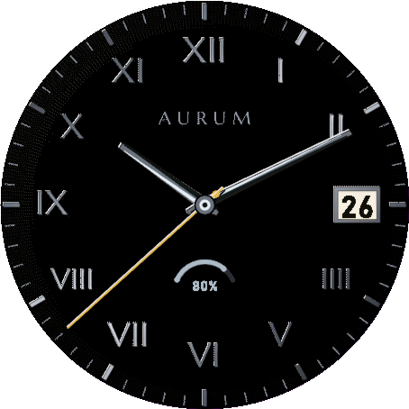

Aurum｜高級時計の文字盤を再現したGarminゴールドウォッチフェイス
既製のウォッチフェイスは、どこか平坦なゴールドに見えることが多いものです。Aurumは、高級時計の文字盤と同じ考え方——層を重ね、光を当て、面を仕上げる——で作ったGarmin向けゴールドウォッチフェイスです。
結論から言うと、5種類のフィニッシュを1回の購入だけで使い分けられ、設定画面からいつでも切り替えられます。
どんな人におすすめですか？
- 対応するGarmin端末を持っていて、既製のウォッチフェイスに物足りなさを感じている方
- スーツやフォーマルな場面でも違和感のない、高級感のある文字盤を探している方
- デザインを1つに絞らず、気分やシーンで切り替えたい方
- 心拍数や歩数などのデータを、文字盤上でさりげなく確認したい方
5つのフィニッシュ
| フィニッシュ | 特徴 |
|---|---|
| Onyx & Gold — Minimal | ローマ数字とゴールドの針だけ。ブラックタイのための文字盤 |
| Onyx & Gold — Data | 大型のデジタル時刻に、ゴールドの秒リングと最大4つのデータ表示 |
| Rose Gold | 深いチャコールの文字盤に、ピンクゴールドのインデックスと針 |
| Champagne | やや淡く暖かいゴールド。日中でも穏やかに読める |
| Gunmetal & Gold | ブラッシュドスチールのインデックスに、秒針だけをゴールドで差し色に |





主な機能
| 機能 | できること |
|---|---|
| データ項目 最大4つ | 心拍数・歩数・消費カロリー・上った階数・距離・ボディバッテリー・時計バッテリー・通知件数から選択 |
| バッテリー残量アーク | 文字盤上で時計本体のバッテリー残量を常時確認 |
| Always-On対応 | 低電力状態では輪郭のみの簡易表示に切り替え、バッテリー消費と焼き付きの両方に配慮 |
| 文字盤の色 | ブラック／チャコールから選択可能 |
対応機種
Venu 3／Venu 3S／Forerunner 265／Forerunner 265S／Forerunner 965／fenix 8 AMOLED（43・47・51mm）／fenix 9（43・47mm）／fenix 9 Pro（43・47・51mm）／epix Pro (Gen 2) 47mm／tactix 8 AMOLED（47mm）
価格と購入方法
インストール後24時間は、すべての機能を無料でお試しいただけます。試用期間の終了後は、1回のアンロック購入(US$5.99・買い切り)ですべての機能が使えるようになります。追加課金や月額はありません。
試用期間が終わると、文字盤に6桁のコードと「www.kzl.io/code」というURLが表示されます。スマートフォンなどでそのURLを開き、コードを入力して購入すると、数分で自動的にアンロックされます。決済はGarminではなく、第三者サービス「KiezelPay」が処理します(クレジットカード／PayPal対応)。一度購入すれば、同じGarminアカウントで使う別の対応機種でも追加購入は不要です。
よくある質問
Q. Aurumは無料で使えますか？
A. インストール後24時間は、すべての機能を無料でお試しいただけます。試用期間の終了後は、US$5.99の買い切り購入ですべての機能が使えるようになります。月額課金はありません。
Q. 支払いはどこで行いますか？
A. Garmin公式の決済ではなく、第三者サービス「KiezelPay」が処理します。試用期間が終わると文字盤に6桁のコードとURLが表示され、スマートフォンでそのURLを開いてコードを入力すると購入できます(クレジットカード・PayPal対応)。
Q. 5つのフィニッシュは追加購入が必要ですか？
A. 不要です。Onyx & Gold(Minimal/Data)・Rose Gold・Champagne・Gunmetal & Goldの5フィニッシュは1回の購入ですべて使え、設定画面からいつでも切り替えられます。
Q. 対応機種はどれですか？
A. Venu 3・Venu 3S・Forerunner 265・Forerunner 265S・Forerunner 965・fenix 8 AMOLED・fenix 9・fenix 9 Pro・epix Pro (Gen 2) 47mm・tactix 8 AMOLEDに対応しています。
Q. バッテリーへの影響はありますか？
A. 低電力状態(Always-On)では、輪郭のみの簡易表示に自動的に切り替わり、点灯ピクセルを抑えてバッテリー消費とAMOLED画面の焼き付きの両方に配慮しています。